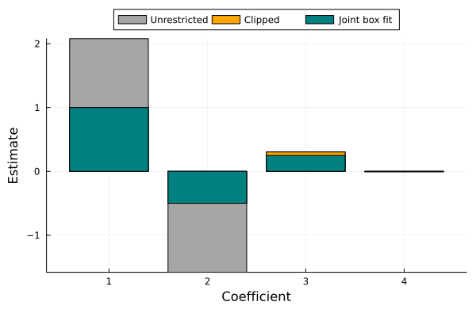

Constrained least squares
Fit a linear model by minimizing the mean squared residual divided by two, subject to bounds on the coefficients.

using LinearAlgebra, Printf, Random, ProximalBase, ProximalSolversBox-constrained least squares
\[\min_{\ell\leq\beta\leq u} \frac{1}{2n}\|X\beta-y\|_2^2.\]
Projection onto the box clamps each coefficient to its interval. If the columns of X are orthogonal and have positive norms, the least-squares objective separates by coordinate, so clamping the unrestricted minimizer solves the constrained problem. For correlated columns, the off-diagonal entries of X'X couple the coefficients.
For the projected-gradient diagnostic, use the inverse Frobenius curvature bound as a fixed positive step. It depends only on the design. A zero mapping is the first-order condition.
function constrained_fit(label, X::Matrix{T}, y, indicator, project, start, reference) where T
A, b = Float64.(X), Float64.(y)
n = length(b)
t = n / sum(abs2, A)
objective(v) = sum(abs2, A * v - b) / (2n)
reference_objective = objective(reference)
tolerance = T === Float32 ? 2e-4 : 2e-7
options = ProximalOptions(maxiter=5000, ftol=eps(T), xtol=1e-12,
gradtol=T === Float32 ? 1e-5 : 1e-10, allow_f_increases=true)
f = inv(T(n)) * LeastSquaresLoss(y, X)
fits = map((ProximalGradientDescent(), AccProxGradDescent())) do method
beta = copy(start)
fit = solve!(beta, f, indicator, method, options)
v = Float64.(beta)
gradient = A' * (A * v - b) / n
violation = norm(v - project(v), Inf)
stationarity = norm(v - project(v - t * gradient), Inf) / t
value = objective(v)
@assert fit.minimizer === beta
@assert violation <= 8eps(T) * max(1, norm(v, Inf))
@assert stationarity <= tolerance
@assert norm(v - reference, Inf) <= tolerance
@assert isapprox(value, reference_objective; atol=tolerance, rtol=0)
@assert isapprox(value, fit.minimum; atol=tolerance, rtol=0)
@printf("%s | %s | objective %.8g | feasibility %.2e | KKT mapping %.2e\n",
label, summary(method), value, violation, stationarity)
beta
end
fits
endconstrained_fit (generic function with 1 method)The data here are of order one, and the tolerances leave room for rounding in the solves and stopping criteria. The diagnostic uses Float64 arithmetic for both working types. Its projection is the mathematical formula.
In the exact control, $X=\sqrt{n}I_4$ and $y=Xa$, so the loss is $\|\beta-a\|_2^2/2$. The first box has asymmetric scalar bounds. The second has coordinatewise bounds and fixes the fourth coefficient at zero.
X_exact = Matrix(2.0I, 4, 4)
a = [2.0, -2.0, 0.25, 1.0]
for (lower, upper) in ((-0.5, 1.0), ([-0.5, -1.0, -1.0, 0.0], [1.0, 0.0, 2.0, 0.0]))
project = v -> clamp.(v, lower, upper)
constrained_fit("Orthogonal box", X_exact, X_exact * a, IndBox(lower, upper),
project, zeros(4), project(a))
endOrthogonal box | Proximal Gradient Descent | objective 1.625 | feasibility 0.00e+00 | KKT mapping 1.38e-10
Orthogonal box | Accelerated Proximal Gradient Descent | objective 1.625 | feasibility 0.00e+00 | KKT mapping 1.01e-11
Orthogonal box | Proximal Gradient Descent | objective 1.5 | feasibility 0.00e+00 | KKT mapping 1.49e-10
Orthogonal box | Accelerated Proximal Gradient Descent | objective 1.5 | feasibility 0.00e+00 | KKT mapping 1.01e-11For the correlated case, use a seeded, strictly diagonally dominant design. Build a response with a known optimum at beta_ref. The loss gradient there is negative on the first coordinate at its upper bound, positive on the second at its lower bound, and zero at the other coordinates. These signs certify optimality for the box, and full column rank gives uniqueness.
rng = Xoshiro(422)
X = X_exact + 0.1 * rand(rng, 4, 4)
box_ref = [1.0, -0.5, 0.25, 0.0]
gradient_ref = [-1.0, 1.0, 0.0, 0.0]
y_box = X * box_ref - X' \ (4 * gradient_ref)
box_project(v) = clamp.(v, -0.5, 1.0)
clipped = box_project(X \ y_box)
@assert norm(clipped - box_ref, Inf) > 0.01
box_beta, _ = constrained_fit("Correlated box", X, y_box, IndBox(-0.5, 1.0),
box_project, zeros(4), box_ref)([1.0, -0.5, 0.24999999986733115, 9.708858116099212e-11], [1.0, -0.5, 0.2500000000027539, -2.5758228089576663e-12])Euclidean-ball-constrained least squares
The constraint $\|\beta\|_2 \leq r$ bounds the total Euclidean size of the coefficients. Projection leaves an interior point unchanged and radially scales an exterior point to norm $r$. For the orthogonal control this gives the constrained solution directly. With correlated columns the solver applies that same projection to successive gradient trials. A single projection of the unrestricted fit generally gives a different point because the least-squares level sets are ellipsoids.
Use a radius with the same floating-point type as the four coefficients. See the input contract for the projection's numerical range.
function radial_projection(v, radius)
magnitude = norm(v)
return iszero(magnitude) ? copy(v) : min(1, radius / magnitude) * v
end
for T in (Float64, Float32)
design, target = T.(X_exact), T.(a)
for radius in (one(T), T(4))
project = v -> radial_projection(v, radius)
constrained_fit("Orthogonal Euclidean ball, $T radius $radius",
design, design * target, IndBallL2(radius), project, zeros(T, 4), project(a))
end
endOrthogonal Euclidean ball, Float64 radius 1.0 | Proximal Gradient Descent | objective 2.0208514 | feasibility 0.00e+00 | KKT mapping 4.44e-16
Orthogonal Euclidean ball, Float64 radius 1.0 | Accelerated Proximal Gradient Descent | objective 2.0208514 | feasibility 0.00e+00 | KKT mapping 4.44e-16
Orthogonal Euclidean ball, Float64 radius 4.0 | Proximal Gradient Descent | objective 7.5790675e-22 | feasibility 0.00e+00 | KKT mapping 2.59e-11
Orthogonal Euclidean ball, Float64 radius 4.0 | Accelerated Proximal Gradient Descent | objective 1.5349431e-21 | feasibility 0.00e+00 | KKT mapping 3.68e-11
Orthogonal Euclidean ball, Float32 radius 1.0 | Proximal Gradient Descent | objective 2.0208513 | feasibility 2.23e-08 | KKT mapping 8.90e-08
Orthogonal Euclidean ball, Float32 radius 1.0 | Accelerated Proximal Gradient Descent | objective 2.0208513 | feasibility 2.23e-08 | KKT mapping 8.90e-08
Orthogonal Euclidean ball, Float32 radius 4.0 | Proximal Gradient Descent | objective 2.4485414e-11 | feasibility 0.00e+00 | KKT mapping 4.65e-06
Orthogonal Euclidean ball, Float32 radius 4.0 | Accelerated Proximal Gradient Descent | objective 4.694245e-11 | feasibility 0.00e+00 | KKT mapping 6.44e-06For the correlated active case, prescribe a unit-norm solution and a gradient of $-2\beta_*$ there. This satisfies the normal-cone condition with a positive multiplier. The independent reference follows from this condition and the full rank of the design.
ball_ref = [0.6, -0.8, 0.0, 0.0]
y_ball = X * ball_ref + X' \ (8 * ball_ref)
ball_project(v) = radial_projection(v, 1.0)
constrained_fit("Correlated Euclidean ball", X, y_ball, IndBallL2(1.0),
ball_project, zeros(4), ball_ref)([0.600000000018159, -0.7999999999863807, -8.358546659772128e-11, 2.634627237446775e-11], [0.5999999999921731, -0.8000000000058701, 3.2765214810256112e-12, -9.484036224929304e-12])Infinity-ball-constrained least squares
With the same loss and $\|\beta\|_\infty \leq r$, each coordinate lies in $[-r,r]$. IndBallLinf(r) constructs that symmetric box. A NormLinf(lambda) penalty instead adds $\lambda\|\beta\|_\infty$ to the objective and has no hard upper bound. Its parameter prices coefficient magnitude, whereas the radius sets a maximum allowed magnitude.
For the orthogonal control the independent answer is clamp.(a, -r, r). The radius of one is active. The radius of three leaves the unrestricted minimizer feasible.
for radius in (1.0, 3.0)
project = v -> clamp.(v, -radius, radius)
constrained_fit("Infinity ball, radius $radius", X_exact, X_exact * a, IndBallLinf(radius),
project, zeros(4), project(a))
end
using Plots
p = bar(1:4, hcat(X \ y_box, clipped, box_beta);
label=["Unrestricted" "Clipped" "Joint box fit"], color=[:gray65 :orange :teal],
xlabel="Coefficient", ylabel="Estimate", xticks=1:4, legend=:outertop, legendcolumns=3)
savefig(p, "constrained_least_squares.svg")
nothingInfinity ball, radius 1.0 | Proximal Gradient Descent | objective 1 | feasibility 0.00e+00 | KKT mapping 1.38e-10
Infinity ball, radius 1.0 | Accelerated Proximal Gradient Descent | objective 1 | feasibility 0.00e+00 | KKT mapping 1.01e-11
Infinity ball, radius 3.0 | Proximal Gradient Descent | objective 7.5790675e-22 | feasibility 0.00e+00 | KKT mapping 2.59e-11
Infinity ball, radius 3.0 | Accelerated Proximal Gradient Descent | objective 1.5349431e-21 | feasibility 0.00e+00 | KKT mapping 3.68e-11